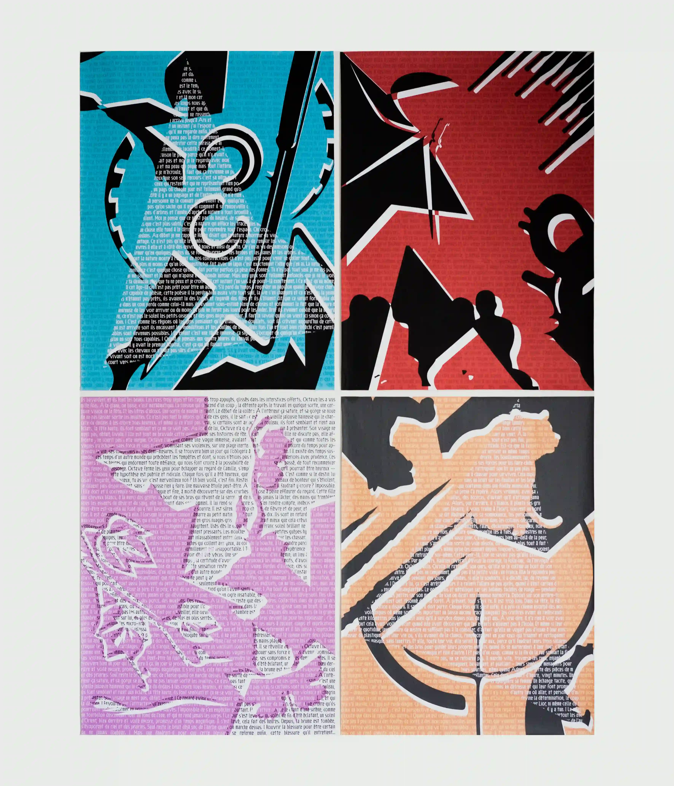
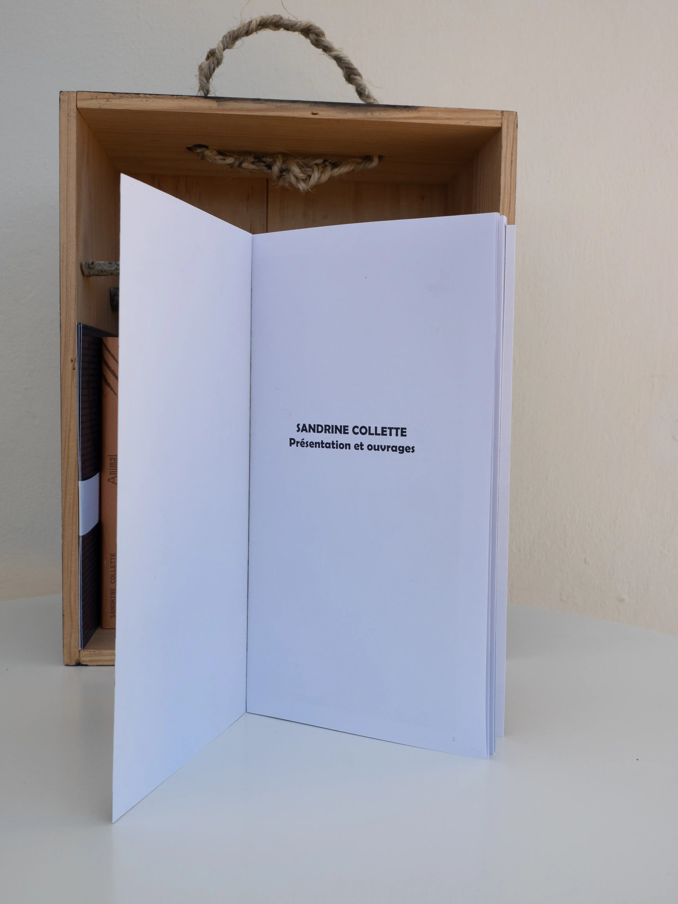
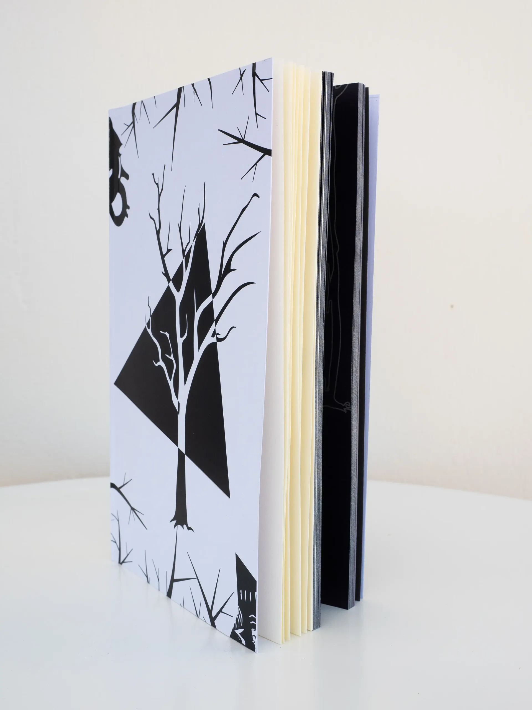
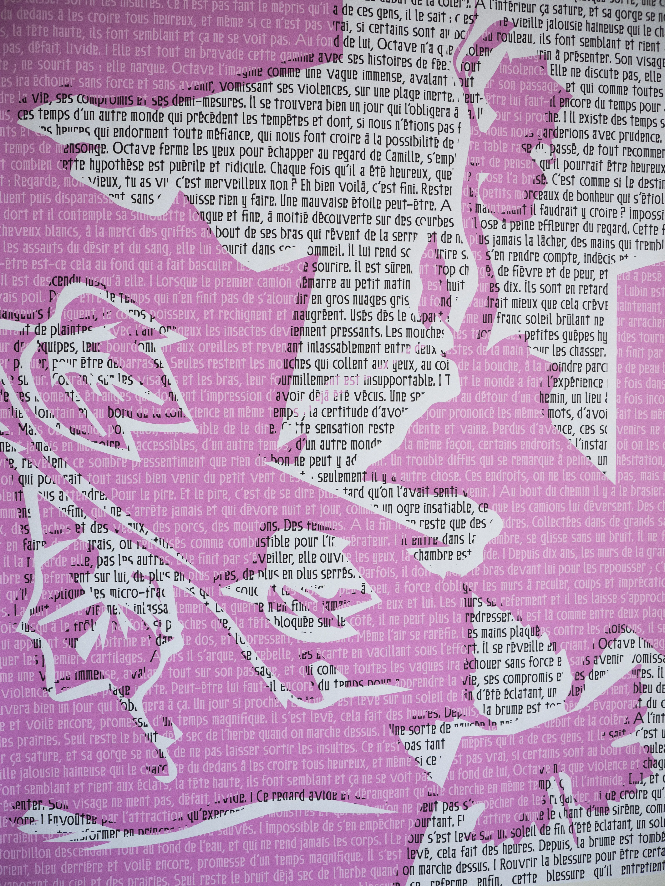
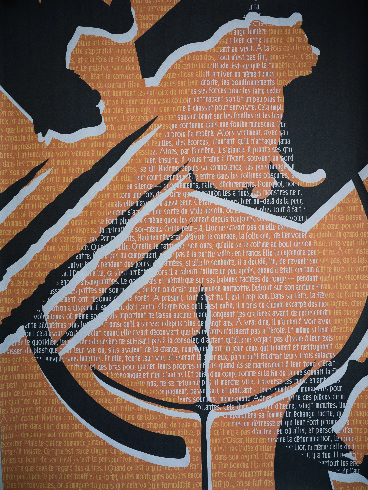
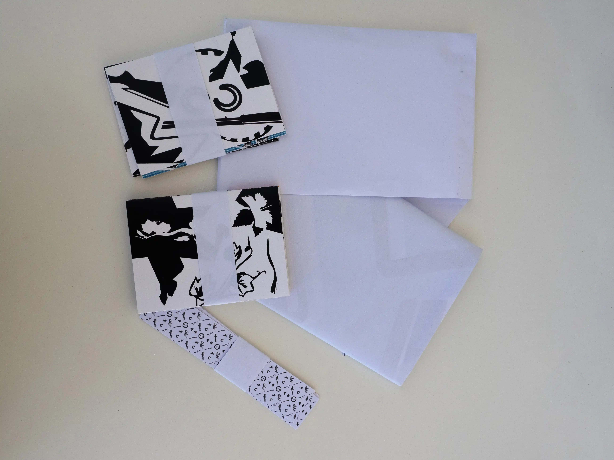
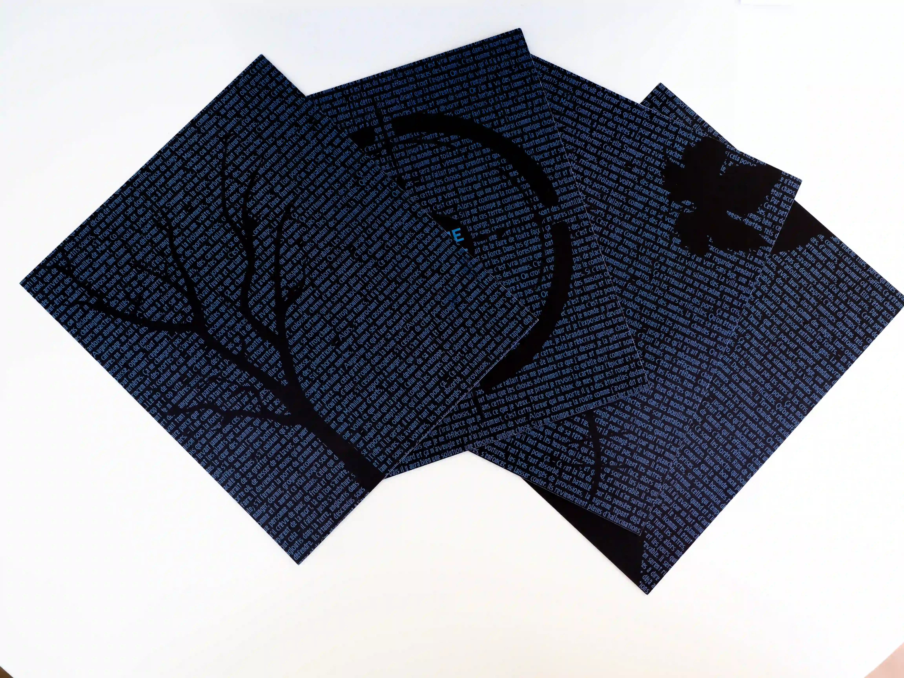
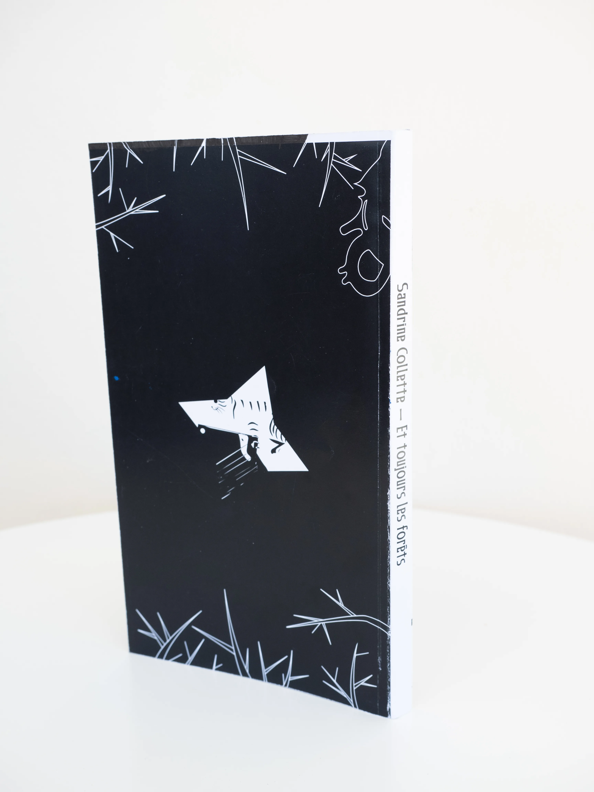
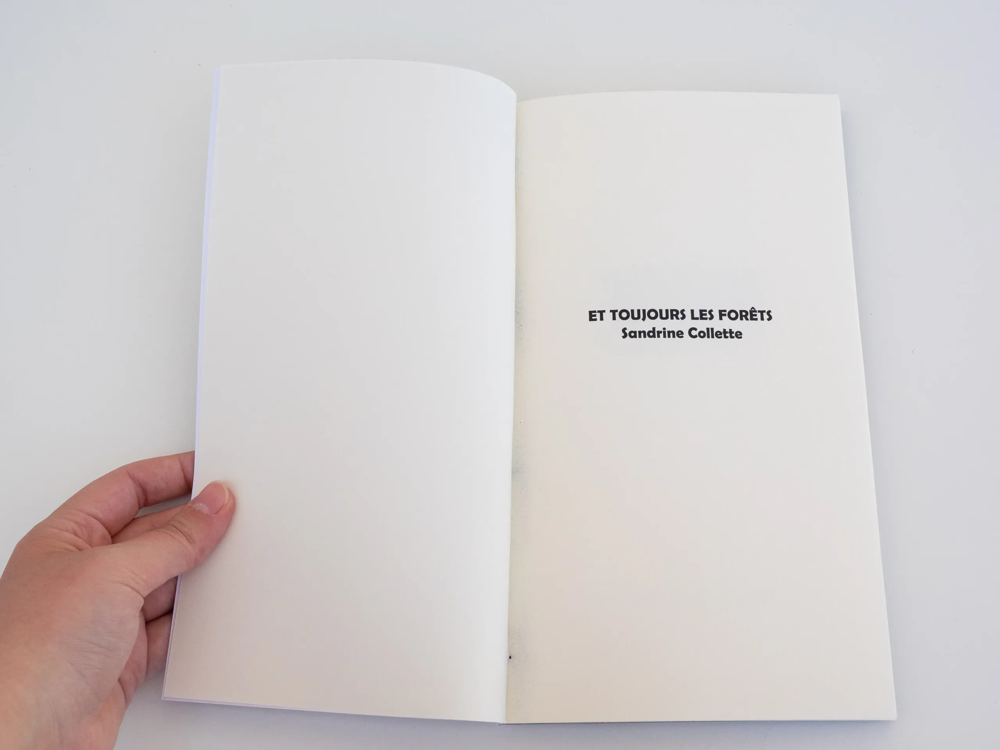

Mode lisibilité
Travail sur un coffret d’artiste, j’ai choisi l’écrivaine Sandrine Collette. J’ai retravaillé certaines des couvertures de l’artiste pour faire ressortir une unité graphique et donner un attrait au livre. Le coffret est également composé de deux éditions, une reprenant l’histoire de son livre «Et toujours les forêts», et une autre servant de bio et bibliographie de l’autriceDimensions couvertures : 11×18cm pour la 1re et 4eDimensions éditions : 14×24cm | 180 pages Et toujours les Forêts
Découvrir plus en détail l'édition arrow_forward"Et Toujours les Forêts"arrow_back








